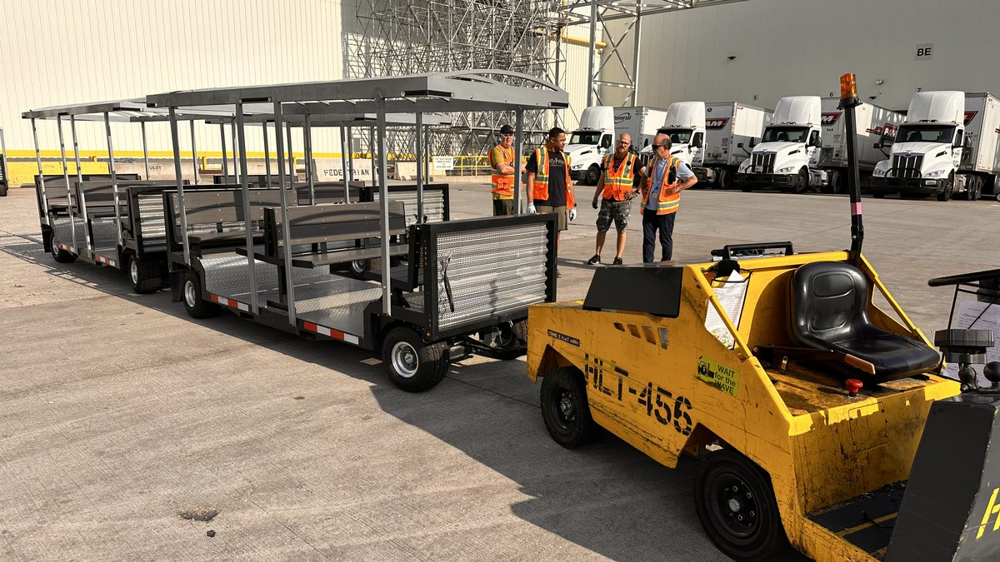

Your MFG Day tour capacity
is your recruiting ceiling.
Most host sites cap tours at 30 students on foot and reach roughly 120 kids in a school day. The waiting list isn't a demand problem — a plant tour is a walk, and a walk has a throughput limit. With the industry needing 3.8 million workers and two-thirds of tour attendees leaving more interested, every student you can't fit into the day is a qualified prospect you declined to meet.
Most MFG Day host sites run tours of 90 to 120 minutes for chaperoned student groups of 30 or fewer. Run the arithmetic against a school day and the picture gets uncomfortable fast: two groups in the morning, two in the afternoon, and you have reached roughly 120 students. One high school in a mid-sized district has more sophomores than that.
The waiting list is not a demand problem. Manufacturers are not turning students away because they lack enthusiasm for the industry's future. They are turning students away because a plant tour is a walk, and a walk has a throughput limit.
MFG Day 2026 lands on Friday, October 2, with events running throughout the month. That is roughly eight weeks of planning runway. It is worth spending some of it on the part of the day nobody treats as a variable. (The Manufacturing Institute)
The waiting list isn't a demand problem. It's a throughput problem. A plant tour is a walk, and a walk has a ceiling — and that ceiling is capping the best recruiting channel in the industry.
How many students can a plant tour actually handle?
The constraint is not the plant. The constraint is the pace of a group on foot.
A modern assembly complex is enormous. General Motors publishes the numbers for its Arlington, Texas facility: 250 acres, roughly six million square feet, and more than 20 miles of conveyors, producing over 1,350 vehicles a day across three shifts. Those figures are typical of the upper end of American heavy manufacturing, and they describe a footprint that cannot be crossed casually. (GM Pressroom)
Even at a fraction of that scale, the math holds. A meaningful tour has four or five stops. The stops are where the learning happens. Everything between them is transit — students walking single-file down a taped aisle, unable to hear anything, while the clock runs. In a 100-minute tour, a substantial share of the time is spent covering ground rather than explaining it.
That transit time is the ceiling. Compress it and every other number moves: more groups per day, more time at each stop, more of the plant included in the route.
Why do manufacturers cap MFG Day group sizes?
Three reasons, and only one of them is about the students.
Supervision ratios. Thirty teenagers on foot in an active industrial environment is a lot of independent decision-making to monitor. Group size is capped to keep the ratio manageable.
Route discipline. In many facilities, pedestrian and powered-vehicle traffic are separated by policy for good reason. A walking group is a distributed object — it stretches, it clumps, stragglers form. A seated group on a defined route is a single object with a known position.
The guide can only be heard by the front six people. Practitioners who run plant tours professionally consistently identify noise as the central obstacle to actually communicating during a visit. The people at the back of a walking group experience the tour as a silent film. (Global Trade Magazine)
Each of those is a vehicle problem wearing a policy costume. A group seated on a purpose-built tram with one driver and one guide is easier to supervise, easier to route, and — critically — easier to talk to.
Planning tours for an industrial campus?
FlexTram builds onsite transit systems for manufacturing plants, distribution centers, and corporate campuses — route planning from your actual traffic and shift patterns, ADA access as standard, and equipment that deploys in hours. Rentals, leases, and turnkey plans available.
What is the safest way to move a student group through an active plant?
The honest answer is: on a defined route, in a defined vehicle, with a defined headcount. Requirements vary by facility, state, and configuration, and every plant's safety team will have its own standards. But the underlying principle is not controversial. Twenty-seven visitors in seats are twenty-seven visitors whose location you know at all times.
This is also where golf carts stop being a serious answer. Reaching 30 students with carts means five or six vehicles, five or six drivers, and a convoy that fragments the moment one cart stops. The group is no longer a group. The narration is no longer shared. And you have introduced five additional vehicles into a space you were trying to keep uncluttered.
One vehicle, one driver, one route, one voice. That is the operational case, and it is the same case FlexTram makes at warehouses and distribution centers, where the geometry problem is identical.
How do you run an accessible plant tour?
MFG Day invites students, parents, educators, and community leaders. That last category matters. The people a plant most wants walking its floor on October 2 — school board members, city council members, economic development staff, workforce board directors — skew significantly older than the students.
A two-hour standing tour quietly filters that audience. So does a route with stairs. So does a facility where the nearest restroom is a quarter mile away. Nobody announces they are opting out; they simply decline the invitation next year, or they come and spend the second half of the tour thinking about their knees instead of your capital investment.
ADA compliance as a standard feature, rather than a special accommodation someone has to request in advance, changes who says yes. It also changes which students can participate. Mobility limitations do not exempt a young person from an interest in advanced manufacturing.
Does a plant tour actually change how students see manufacturing?
The data on this is unusually strong, which is what makes the capacity ceiling so expensive.
Deloitte, working with The Manufacturing Institute, has surveyed MFG Day attendees for years. Their findings have been consistent: 84 percent of student attendees came away more convinced that manufacturing offers interesting and rewarding careers, 89 percent reported greater awareness of manufacturing jobs in their own communities, and 64 percent said they were more motivated to pursue a manufacturing career. In an earlier survey year, 93 percent of educators reported the same shift in perception, and 90 percent said they were more likely to encourage students toward the industry. (NIST / Modern Materials Handling)
Set that against the recruiting problem. The Manufacturing Institute projects the industry needs to fill 3.8 million high-skill, high-tech, high-paying jobs over the next decade.
The conversion rate on a plant tour is extraordinary. Roughly two-thirds of the students who walk through your door leave more interested in working there. There is no other recruiting channel in manufacturing that performs like that. Which means every student you cannot fit into the day is not a scheduling inconvenience. It is a qualified prospect you declined to meet.
How do you scale MFG Day beyond one day in October?
The Manufacturing Institute has been explicit about this, encouraging hosts to think past the single date: one great event in October is a start, but a year-round commitment to student engagement is a strategy.
That is the right instinct, and it immediately runs into the same wall. If the tour is a bespoke, labor-intensive, capacity-limited event that requires the plant manager's personal involvement, it will happen once a year. If it is a repeatable operation — a fixed route, a posted schedule, a vehicle that stages in the morning and stores in the afternoon — it can happen monthly.
The difference between an event and a program is whether the logistics are reinvented each time.
This is why FlexTram's pitch is never really about the vehicle. Twenty-seven passengers and one driver is a specification. The product is the system around it: route planning built from your plant's actual traffic and shift patterns, a schedule visitors can be handed on arrival, ADA access as a default rather than an exception, and equipment that deploys in hours and stores when the tour season ends. The vehicles operate across asphalt, gravel, grass, and dirt with independently turning axles, which matters more than it sounds like it should when the route includes the yard between two buildings. It's the same system that turns a one-off facility tour into a repeatable program.
There is a secondary benefit worth naming. A tram is a surface. Plant branding, program sponsors, and a local workforce partner's logo all fit on the side of it — and it photographs well, which is not a trivial consideration when the local paper sends someone to cover your open house.
The part nobody plans
Manufacturing has spent a decade building a genuinely compelling story about modern industrial careers — the robotics, the pay, the pathway that does not require four years of tuition. The story works. The survey data proves it works.
It just requires standing on a plant floor to hear it.
The best recruiting tool in American manufacturing is the building you already own. The only thing between it and the next generation is the walk.
— The FlexTram Team
Frequently asked questions
How many students can a typical MFG Day plant tour handle?
Most MFG Day host sites run 90-to-120-minute tours for chaperoned groups of 30 students or fewer. Two groups in the morning and two in the afternoon gets a site to roughly 120 students in a school day — fewer sophomores than a single mid-sized high school has. The constraint isn't the plant; it's the pace of a group on foot. A meaningful tour has four or five learning stops, and a large share of the tour clock is spent walking single-file between them rather than at the stops. Compressing that transit time is what raises the number of groups per day.
Why do manufacturers cap MFG Day tour group sizes?
Three reasons, and only one is about the students. Supervision ratios: 30 teenagers on foot in an active industrial environment is a lot of independent movement to monitor. Route discipline: many facilities separate pedestrian and powered-vehicle traffic by policy, and a walking group stretches, clumps, and forms stragglers. Audibility: the guide can realistically only be heard by the front several people, so the back of a walking group experiences the tour as a silent film. A group seated on a purpose-built tram with one driver and one guide is easier to supervise, easier to route, and easier to talk to.
What is the safest way to move a student group through an active plant?
On a defined route, in a defined vehicle, with a defined headcount. Requirements vary by facility, state, and configuration, and every plant's safety team sets its own standards — but the underlying principle isn't controversial: 27 visitors in seats are 27 visitors whose location is known at all times. Reaching 30 students with golf carts means five or six vehicles, five or six drivers, and a convoy that fragments the moment one cart stops. One vehicle, one driver, one route, one voice keeps the group a group and adds no extra vehicles to a space you're trying to keep uncluttered.
Does touring a plant actually change how students view manufacturing careers?
The data is unusually strong. Deloitte and The Manufacturing Institute have surveyed MFG Day attendees for years and found that 84% of student attendees came away more convinced manufacturing offers interesting, rewarding careers, 89% reported greater awareness of local manufacturing jobs, and 64% were more motivated to pursue a manufacturing career. In an earlier survey year, 93% of educators reported the same shift and 90% said they were more likely to encourage students toward the industry. Against a projected need to fill 3.8 million jobs over the next decade, a channel that converts roughly two-thirds of attendees is extraordinary — which is what makes a capacity ceiling so expensive.
How do you turn MFG Day into a year-round program instead of a one-day event?
The difference between an event and a program is whether the logistics are reinvented each time. If a tour is a bespoke, labor-intensive, capacity-limited effort that needs the plant manager's personal involvement, it happens once a year. If it's a repeatable operation — a fixed route, a posted schedule, a vehicle that stages in the morning and stores in the afternoon — it can happen monthly. FlexTram builds the system around the vehicle: route planning from the plant's actual traffic and shift patterns, a schedule visitors can be handed on arrival, ADA access as a default, and equipment that deploys in hours and stores when tour season ends.
Related reading
The best recruiting tool you own is the building. The only thing in the way is the walk.
FlexTram builds onsite transit systems for manufacturing plants, industrial campuses, distribution centers, and corporate facilities — route planning, ADA access as standard, and equipment that deploys in hours. Rentals, long-term leases, and turnkey transportation plans available.